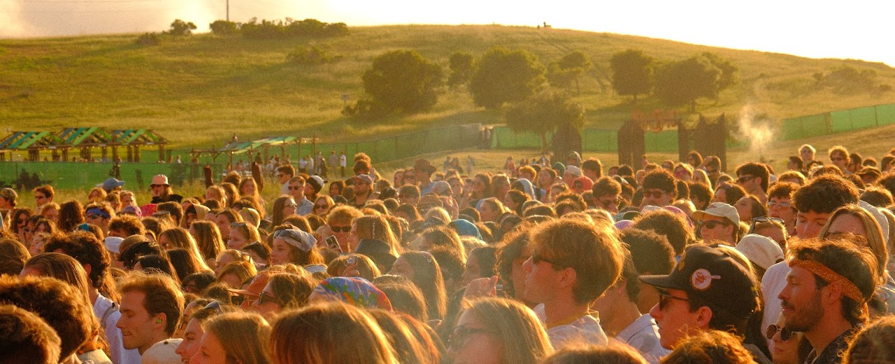
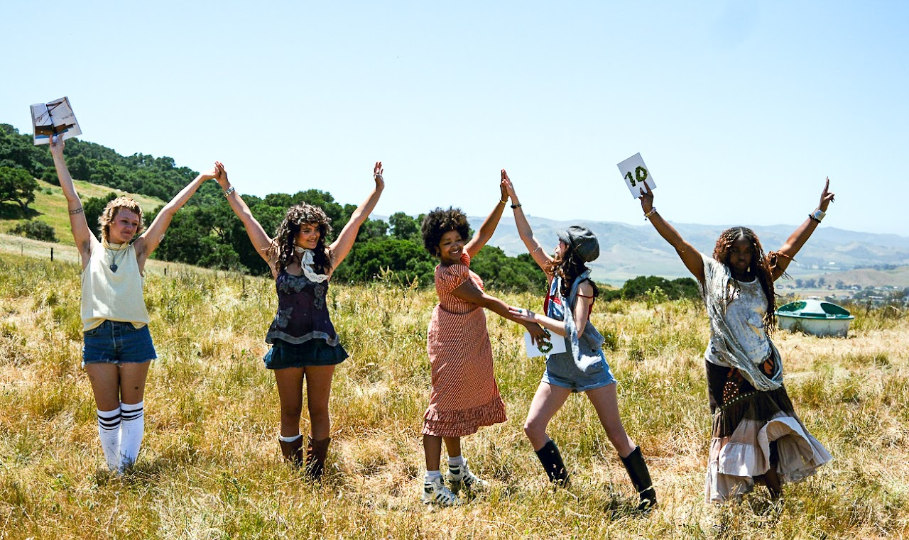
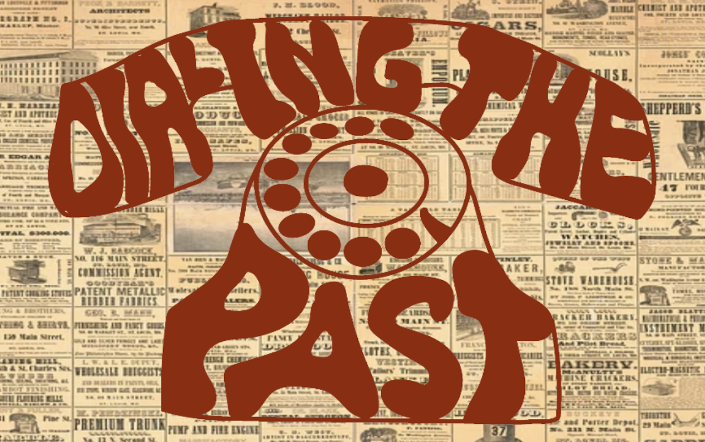

San Luis Obispo, California

Shabang 2025 · Battle of the Bands
View work ↗
WavZine · KCPR
View work ↗
@hazeyjane.designs
View work ↗Hi! My name is Becca, and I am a second year Journalism major with a minor in photography and video at Cal Poly. The specific concentrations I gravitate towards are photography and collage, and I would say my biggest inspirations come from my surroundings within San Luis Obispo. I believe with each photo I take and each drawing I create; I am telling my story and the stories of others that surround me. Above all else, I aim to get inspired and inspire others, so enjoy!